CODING AGENTS AS PIXEL WORLD MODELS
traex/GPT-6.1-Sol · 0053
点击播放 · 原生 RGB 像素
逐轮保存的候选
回放视频、检查图与代码变化。
每份候选均可单独播放。实际图片检查记录在下方工具轨迹中。
候选 01播放与检查图
点击播放 · 原生 RGB 像素
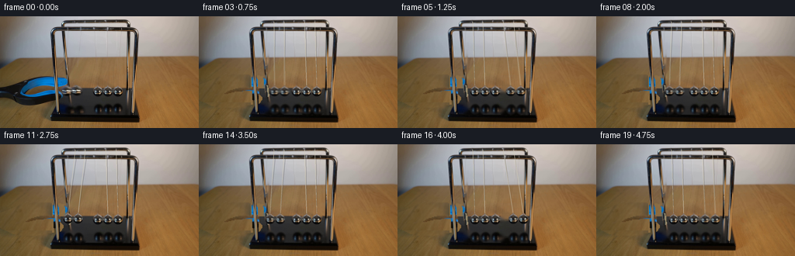
展开代码变化
--- 上一保存版本
+++ 本次保存版本
@@ -0,0 +1,195 @@
+from pathlib import Path
+import numpy as np
+from PIL import Image, ImageDraw, ImageFilter
+import cv2
+from scipy.ndimage import map_coordinates, gaussian_filter
+from artifact_io import save
+
+ROOT=Path(__file__).resolve().parent
+ORG=np.array(Image.open(ROOT/'first_frame.png').convert('RGB'))
+H,W=ORG.shape[:2]
+Y,X=np.mgrid[:H,:W].astype(float)
+
+def poly_mask(points):
+ im=Image.new('L',(W,H)); ImageDraw.Draw(im).polygon(points,fill=255)
+ return np.asarray(im).copy()
+
+# The grasping implement is a separate foreground layer; preserve the chrome
+# support posts in front of it.
+tool_outline=[(0,90),(9,87),(19,83),(28,79),(42,77),(63,77),(77,78),(85,79),(88,82),(88,87),(83,90),(70,91),(58,89),(49,90),(35,94),(29,99),(26,102),(35,102),(47,99),(58,98),(67,98),(73,100),(78,103),(80,107),(77,110),(65,112),(46,115),(29,116),(17,113),(11,110),(0,105)]
+tool=poly_mask(tool_outline)
+# Soft silhouette, but not the frame uprights.
+tool = cv2.GaussianBlur(tool,(3,3),.52).astype(float)/255
+frontpost=poly_mask([(65,17),(71,15),(77,119),(79,127),(71,127),(68,83)])>0
+backpost=poly_mask([(78,9),(85,9),(91,103),(94,125),(87,125),(82,72)])>0
+# narrow post occlusion mask derived from the visible boundaries
+frontpost=poly_mask([(69,64),(73,64),(77,125),(71,126)])>0
+backpost=poly_mask([(81,61),(85,60),(91,105),(93,125),(88,125),(85,93)])>0
+tool[frontpost|backpost]=0
+
+# Recover the wooden tabletop's low frequency illumination and use only the
+# photographed tabletop for fine grain in the newly uncovered region.
+known=np.zeros((H,W),bool)
+known[118:144,0:61]=True
+known[61:77,14:63]=True
+known[66:135,190:256]=True
+known[55:73,95:165]=True
+known[72:86,95:165]=True
+known[70:100,0:12]=False
+features=np.stack([np.ones_like(X),X/256,Y/144,(X/256)**2,(Y/144)**2,X*Y/(256*144)],-1)
+coef=np.linalg.lstsq(features[known],ORG[known].astype(float),rcond=None)[0]
+illum=features@coef
+residual=ORG.astype(float)-illum
+# Mirror an undisturbed near-left grain patch so its light level can be matched.
+sx=np.mod(X*.83+3,58)
+sy=118+np.mod((Y-75)*.71,25)
+texture=np.stack([map_coordinates(residual[:,:,c],[sy,sx],order=1,mode='reflect') for c in range(3)],-1)
+wood=np.clip(illum+texture*.82,0,255)
+# Clone the thin exposed portion of the plinth rather than extrapolating wood.
+basezone=(X>=(-.71*(Y-127)+67))&(Y>=93)&(Y<128)
+basecol=np.stack([np.full((H,W),v) for v in (45,45,43)],-1).astype(float)
+basecol+=((Y-103)*(-.25))[...,None]
+# Only the rightmost edge of the grabber crosses the base at the front left.
+replace=wood.copy(); replace[basezone]=basecol[basezone]
+# mask expanded one pixel so blue and dark defocus fringes disappear
+wipe=cv2.dilate((tool>0.1).astype(np.uint8),np.ones((3,3),np.uint8))
+wipe[frontpost|backpost]=0
+blend=cv2.GaussianBlur(wipe.astype(float),(3,3),.4)
+plate=ORG.astype(float)*(1-blend[...,None])+replace*blend[...,None]
+
+# Four active bob silhouettes, eyelets, and their reflected images are removed
+# from the still plate. The central bob is kept pixel-for-pixel.
+remove=np.zeros((H,W),np.uint8)
+for cx,cy in [(85.3,96.3),(98.3,96.4),(138.9,97.4),(152.0,97.4)]:
+ cv2.ellipse(remove,(round(cx),round(cy)),(8,8),0,0,360,255,-1)
+for cx in [92,103,139,152]:
+ cv2.ellipse(remove,(cx,119),(9,9),0,0,360,255,-1)
+# Blur the big left pair remnants into matte black below the back edge.
+plate=cv2.inpaint(np.uint8(np.clip(plate,0,255)),remove,4,cv2.INPAINT_TELEA).astype(float)
+# Rebuild the black rear edge where the raised left two spheres hid it.
+for yy in range(90,109):
+ for xx in range(78,112):
+ if remove[yy,xx] and not backpost[yy,xx] and not frontpost[yy,xx]:
+ if yy>=93:
+ # locally sample the large uninterrupted matte interval
+ val=ORG[min(yy,108),115].astype(float)
+ plate[yy,xx]=val
+# Restore the original support rail where visible and analytically continue
+# its short occluded segment behind the left sphere.
+for yy in range(88,104):
+ center=87.2+(yy-88)*.125
+ for xx in range(84,94):
+ dd=xx-center
+ if abs(dd)<2.2 and remove[yy,xx]:
+ palette=[(28,28,28),(61,64,64),(143,132,104),(162,146,112),(79,75,59)]
+ k=min(4,max(0,int((dd+2.2)/4.4*5)))
+ plate[yy,xx]=palette[k]
+
+# Remove the old moving suspension threads with a local horizontal median;
+# strings are a pair of light, thin filaments for each bob.
+for i,coords in enumerate([((92,17),(85,89)),((104,17),(98,89)),((139,17),(139,89)),((152,17),(152,89))]):
+ (ax,ay),(bx,by)=coords
+ for yy in range(ay+2,by+1):
+ xx=int(round(ax+(bx-ax)*(yy-ay)/(by-ay)))
+ if frontpost[yy,xx] or backpost[yy,xx]: continue
+ # preserve table grain rather than painting a solid line
+ for off in [-1,0,1]:
+ x0=xx+off
+ plate[yy,x0]=(plate[yy,max(0,xx-3)]+plate[yy,min(255,xx+3)])*.5
+
+# Photographic sphere sprites retain the complicated room reflections.
+S=4
+
+def sphere_sprite(cx):
+ x0=int(round(cx))-8; y0=88
+ crop=Image.fromarray(ORG[y0:106,x0:x0+17]).resize((17*S,18*S),Image.Resampling.BICUBIC)
+ yy,xx=np.mgrid[0:18*S,0:17*S]; xx=(xx+.5)/S; yy=(yy+.5)/S
+ ccx=cx-x0; ccy=97.2-y0
+ rr=np.sqrt(((xx-ccx)/6.25)**2+((yy-ccy)/6.22)**2)
+ a=np.clip((1-rr)*S*6.22+.5,0,1)
+ # chrome eyelet at the crown of each bob
+ eye=np.clip((1-np.sqrt(((xx-ccx)/2.0)**2+((yy-3.0)/2.0)**2))*S*2+.5,0,1)
+ a=np.maximum(a,eye)
+ rgba=np.dstack([np.array(crop),np.uint8(a*255)])
+ return Image.fromarray(rgba), (ccx*S,(97.2-y0)*S)
+
+sprites=[sphere_sprite(125.8),sphere_sprite(138.9),sphere_sprite(125.8),sphere_sprite(138.9),sphere_sprite(152.0)]
+
+# Soft mirror images retain the same steel highlights, with the defocus and
+# reduced brightness visible in the source frame.
+def reflection_sprite(cx):
+ x0=int(round(cx))-9; y0=110
+ crop=np.array(Image.fromarray(ORG[y0:129,x0:x0+19]).resize((19*S,19*S),Image.Resampling.BICUBIC))
+ yy,xx=np.mgrid[0:19*S,0:19*S]; xx=(xx+.5)/S; yy=(yy+.5)/S
+ r=np.sqrt(((xx-(cx-x0))/7.7)**2+((yy-9.1)/8.4)**2)
+ a=np.clip((1-r)*3.0,0,1)*.92
+ return Image.fromarray(np.dstack([crop,np.uint8(a*255)])),((cx-x0)*S,9.1*S)
+refl=reflection_sprite(139.0)
+
+rest=np.array([99.5,112.6,125.8,138.9,152.0])
+L=80.0
+A0=14.0
+period=.89
+release=.06
+
+def positions(t):
+ t=max(0,t-release)
+ w=2*np.pi/period
+ q=-A0*np.cos(w*t)*np.exp(-.050*t)
+ x=rest.copy()
+ if q<0: x[:2]+=q
+ else: x[3:]+=q
+ off=x-rest
+ y=97.2-(L-np.sqrt(L*L-off*off))
+ return x,y
+
+plate=np.uint8(np.clip(plate,0,255))
+Image.fromarray(plate).save(ROOT/'.tmp/plate.png')
+base=Image.fromarray(plate).resize((W*S,H*S),Image.Resampling.BICUBIC).convert('RGBA')
+tool_rgba=Image.fromarray(np.dstack([ORG,np.uint8(tool*255)])).resize((W*S,H*S),Image.Resampling.BICUBIC)
+# Occlusion by the frame metal is preserved, including when bobs pass behind
+# a front post on their outermost excursion.
+postmask=poly_mask([(66,19),(71,17),(74,72),(77,121),(78,128),(71,128),(68,88)])
+postmask2=poly_mask([(173,20),(177,20),(173,128),(168,128),(169,70)])
+postmask=np.maximum(postmask,postmask2)
+posts=Image.fromarray(np.dstack([ORG,postmask])).resize((W*S,H*S),Image.Resampling.BICUBIC)
+
+# Minimal static plate is only exposed where motion requires it.
+def draw_at(t):
+ im=base.copy()
+ xs,ys=positions(t)
+ # Reflections move on the same matte pedestal, rather than remaining still.
+ for i in [0,1,3,4]:
+ spr,cent=refl
+ rise=97.2-ys[i]
+ im.alpha_composite(spr,(round(xs[i]*S-cent[0]+.6*S),round((119.1+rise*.72)*S-cent[1])))
+ # Withdraw the now empty grasping tool toward the left hand edge.
+ progress=np.clip(t/.65,0,1)
+ displacement=108*(progress*progress*(3-2*progress))
+ if displacement<100:
+ im.alpha_composite(tool_rgba,(round(-displacement*S),round(progress*4*S)))
+ d=ImageDraw.Draw(im,'RGBA')
+ for i in [0,1,3,4]:
+ cx,cy=xs[i],ys[i]
+ # suspension at the front and rear crossbars; the camera projects the
+ # two wires to a shallow V terminating at the polished steel eyelet.
+ for ax,ay,light in [(rest[i]-.9,16.0,False),(rest[i]-2.7,7.0,True)]:
+ end=(cx,cy-5.3)
+ col=(76,72,64,76) if not light else (203,198,179,86)
+ d.line((ax*S,ay*S,end[0]*S,end[1]*S),fill=col,width=1)
+ if light:
+ d.line(((ax+.22)*S,ay*S,(end[0]+.22)*S,end[1]*S),fill=(214,206,184,42),width=1)
+ for i in [0,1,3,4]:
+ spr,cent=sprites[i]
+ im.alpha_composite(spr,(round(xs[i]*S-cent[0]),round(ys[i]*S-cent[1])))
+ im.alpha_composite(posts)
+ return np.array(im.convert('RGB').resize((W,H),Image.Resampling.LANCZOS))
+
+frames=[ORG.copy()]
+for n in range(1,20):
+ t=n/4
+ # Short, realistic exposure integrates the rapidly moving polished spheres.
+ samples=[draw_at(t+dt).astype(float) for dt in [-.009,0,.009]]
+ frames.append(np.uint8(np.clip(sum(samples)/3+.5,0,255)))
+frames=np.stack(frames)
+save(frames,ROOT)
候选 02播放与检查图
点击播放 · 原生 RGB 像素

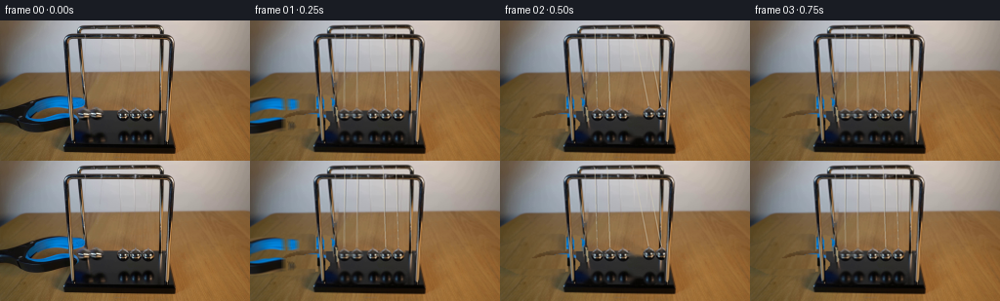
展开代码变化
--- 上一保存版本
+++ 本次保存版本
@@ -16,15 +16,14 @@
# The grasping implement is a separate foreground layer; preserve the chrome
# support posts in front of it.
-tool_outline=[(0,90),(9,87),(19,83),(28,79),(42,77),(63,77),(77,78),(85,79),(88,82),(88,87),(83,90),(70,91),(58,89),(49,90),(35,94),(29,99),(26,102),(35,102),(47,99),(58,98),(67,98),(73,100),(78,103),(80,107),(77,110),(65,112),(46,115),(29,116),(17,113),(11,110),(0,105)]
+tool_outline=[(0,90),(9,87),(19,83),(28,79),(42,77),(63,77),(77,78),(85,79),(88,82),(88,87),(83,91),(73,93),(72,98),(78,103),(80,107),(77,110),(65,113),(46,115),(29,116),(17,113),(11,110),(0,105)]
tool=poly_mask(tool_outline)
# Soft silhouette, but not the frame uprights.
tool = cv2.GaussianBlur(tool,(3,3),.52).astype(float)/255
-frontpost=poly_mask([(65,17),(71,15),(77,119),(79,127),(71,127),(68,83)])>0
-backpost=poly_mask([(78,9),(85,9),(91,103),(94,125),(87,125),(82,72)])>0
-# narrow post occlusion mask derived from the visible boundaries
-frontpost=poly_mask([(69,64),(73,64),(77,125),(71,126)])>0
-backpost=poly_mask([(81,61),(85,60),(91,105),(93,125),(88,125),(85,93)])>0
+frontcenter=68.6+(Y-20)*.052
+backcenter=84.0+(Y-60)*.12
+frontpost=(np.abs(X-frontcenter)<2.1)&(Y>=20)&(Y<127)
+backpost=(np.abs(X-backcenter)<1.65)&(Y>=60)&(Y<125)
tool[frontpost|backpost]=0
# Recover the wooden tabletop's low frequency illumination and use only the
@@ -41,12 +40,12 @@
illum=features@coef
residual=ORG.astype(float)-illum
# Mirror an undisturbed near-left grain patch so its light level can be matched.
-sx=np.mod(X*.83+3,58)
-sy=118+np.mod((Y-75)*.71,25)
+sx=np.minimum(255,X+164)
+sy=Y
texture=np.stack([map_coordinates(residual[:,:,c],[sy,sx],order=1,mode='reflect') for c in range(3)],-1)
wood=np.clip(illum+texture*.82,0,255)
# Clone the thin exposed portion of the plinth rather than extrapolating wood.
-basezone=(X>=(-.71*(Y-127)+67))&(Y>=93)&(Y<128)
+basezone=(X>=(-.48*(Y-93)+82))&(Y>=93)&(Y<128)
basecol=np.stack([np.full((H,W),v) for v in (45,45,43)],-1).astype(float)
basecol+=((Y-103)*(-.25))[...,None]
# Only the rightmost edge of the grabber crosses the base at the front left.
@@ -66,10 +65,10 @@
cv2.ellipse(remove,(cx,119),(9,9),0,0,360,255,-1)
# Blur the big left pair remnants into matte black below the back edge.
plate=cv2.inpaint(np.uint8(np.clip(plate,0,255)),remove,4,cv2.INPAINT_TELEA).astype(float)
-# Rebuild the black rear edge where the raised left two spheres hid it.
+# Rebuild the sharp rear edge underneath the moving objects.
for yy in range(90,109):
- for xx in range(78,112):
- if remove[yy,xx] and not backpost[yy,xx] and not frontpost[yy,xx]:
+ for xx in range(78,161):
+ if remove[yy,xx] and not backpost[yy,xx] and not frontpost[yy,xx] and abs(xx-125.8)>7:
if yy>=93:
# locally sample the large uninterrupted matte interval
val=ORG[min(yy,108),115].astype(float)
@@ -97,6 +96,23 @@
x0=xx+off
plate[yy,x0]=(plate[yy,max(0,xx-3)]+plate[yy,min(255,xx+3)])*.5
+# The reflected moving balls reveal the neutral lacquer, not dark ghosts.
+for yy in range(107,128):
+ color=np.mean(ORG[yy,110:118].astype(float),axis=0)
+ for xx in range(78,163):
+ if remove[yy,xx] and not backpost[yy,xx] and not frontpost[yy,xx]:
+ plate[yy,xx]=color
+# Repair color spill at the two rails where the blue jaw was occluded.
+postcolors=ORG.copy().astype(float)
+for yy in range(76,112):
+ for xx in range(67,93):
+ if frontpost[yy,xx] or backpost[yy,xx]:
+ c=postcolors[yy,xx].copy()
+ if c[2]>c[0]*1.13:
+ c[2]=c[0]*.88; c[1]=c[0]*1.02
+ plate[yy,xx]=c
+ postcolors[yy,xx]=c
+
# Photographic sphere sprites retain the complicated room reflections.
S=4
@@ -149,10 +165,10 @@
tool_rgba=Image.fromarray(np.dstack([ORG,np.uint8(tool*255)])).resize((W*S,H*S),Image.Resampling.BICUBIC)
# Occlusion by the frame metal is preserved, including when bobs pass behind
# a front post on their outermost excursion.
-postmask=poly_mask([(66,19),(71,17),(74,72),(77,121),(78,128),(71,128),(68,88)])
-postmask2=poly_mask([(173,20),(177,20),(173,128),(168,128),(169,70)])
-postmask=np.maximum(postmask,postmask2)
-posts=Image.fromarray(np.dstack([ORG,postmask])).resize((W*S,H*S),Image.Resampling.BICUBIC)
+postmask=np.uint8((frontpost|backpost)*255)
+# Keep the right upright in front of a sphere at its outward amplitude.
+postmask=np.maximum(postmask,poly_mask([(173,20),(177,20),(173,128),(169,128),(169,70)]))
+posts=Image.fromarray(np.dstack([np.uint8(postcolors),postmask])).resize((W*S,H*S),Image.Resampling.BICUBIC)
# Minimal static plate is only exposed where motion requires it.
def draw_at(t):
@@ -168,7 +184,8 @@
displacement=108*(progress*progress*(3-2*progress))
if displacement<100:
im.alpha_composite(tool_rgba,(round(-displacement*S),round(progress*4*S)))
- d=ImageDraw.Draw(im,'RGBA')
+ wirelayer=Image.new('RGBA',im.size,(0,0,0,0))
+ d=ImageDraw.Draw(wirelayer,'RGBA')
for i in [0,1,3,4]:
cx,cy=xs[i],ys[i]
# suspension at the front and rear crossbars; the camera projects the
@@ -179,6 +196,7 @@
d.line((ax*S,ay*S,end[0]*S,end[1]*S),fill=col,width=1)
if light:
d.line(((ax+.22)*S,ay*S,(end[0]+.22)*S,end[1]*S),fill=(214,206,184,42),width=1)
+ im.alpha_composite(wirelayer)
for i in [0,1,3,4]:
spr,cent=sprites[i]
im.alpha_composite(spr,(round(xs[i]*S-cent[0]),round(ys[i]*S-cent[1])))
候选 03播放与检查图
候选 04播放与检查图
点击播放 · 原生 RGB 像素
展开代码变化
--- 上一保存版本
+++ 本次保存版本
@@ -40,7 +40,7 @@
illum=features@coef
residual=ORG.astype(float)-illum
# Mirror an undisturbed near-left grain patch so its light level can be matched.
-sx=np.minimum(255,X+164)
+sx=194+np.mod(X*.61,56)
sy=Y
texture=np.stack([map_coordinates(residual[:,:,c],[sy,sx],order=1,mode='reflect') for c in range(3)],-1)
wood=np.clip(illum+texture*.82,0,255)
@@ -96,22 +96,40 @@
x0=xx+off
plate[yy,x0]=(plate[yy,max(0,xx-3)]+plate[yy,min(255,xx+3)])*.5
-# The reflected moving balls reveal the neutral lacquer, not dark ghosts.
-for yy in range(107,128):
- color=np.mean(ORG[yy,110:118].astype(float),axis=0)
- for xx in range(78,163):
- if remove[yy,xx] and not backpost[yy,xx] and not frontpost[yy,xx]:
- plate[yy,xx]=color
-# Repair color spill at the two rails where the blue jaw was occluded.
+# Recover a smooth, dark lacquer plane and remove both the old shadows
+# and the blue object's reflected glow.
+basepoly=poly_mask([(82,93),(164,92),(168,127),(68,127)])>0
+matte=np.zeros_like(plate)
+for yy in range(H):
+ source=np.mean(ORG[max(94,min(126,yy)),110:118].astype(float),axis=0)
+ matte[yy,:,:]=source
+# Very subtle illumination falloff over the base.
+matte+=(np.clip((X-120)*.013,-.5,.5))[...,None]
+central=((X-125.8)/7.2)**2+((Y-97.2)/8.5)**2 < 1
+repair=basepoly & ~frontpost & ~backpost & ~central
+plate[repair]=matte[repair]
+# Correct reflected tool color on the two steel upright edges, while keeping
+# the rail's photographed highlight texture elsewhere.
postcolors=ORG.copy().astype(float)
for yy in range(76,112):
- for xx in range(67,93):
+ for xx in range(67,94):
if frontpost[yy,xx] or backpost[yy,xx]:
c=postcolors[yy,xx].copy()
if c[2]>c[0]*1.13:
c[2]=c[0]*.88; c[1]=c[0]*1.02
plate[yy,xx]=c
postcolors[yy,xx]=c
+# At the initial lifted spheres, recreate the segment of rear upright which
+# was hidden by the balls, including its narrow warm highlight.
+for yy in range(90,103):
+ cc=84+(yy-60)*.12
+ for xx in range(84,94):
+ if abs(xx-cc)<1.8:
+ delta=xx-cc
+ vals=[(32,31,29),(67,68,64),(145,131,104),(95,85,70)]
+ k=int(np.clip((delta+1.8)/3.6*4,0,3))
+ postcolors[yy,xx]=vals[k]
+ plate[yy,xx]=vals[k]
# Photographic sphere sprites retain the complicated room reflections.
S=4
@@ -175,7 +193,7 @@
im=base.copy()
xs,ys=positions(t)
# Reflections move on the same matte pedestal, rather than remaining still.
- for i in [0,1,3,4]:
+ for i in [0,1,2,3,4]:
spr,cent=refl
rise=97.2-ys[i]
im.alpha_composite(spr,(round(xs[i]*S-cent[0]+.6*S),round((119.1+rise*.72)*S-cent[1])))
候选 05播放与检查图
点击播放 · 原生 RGB 像素
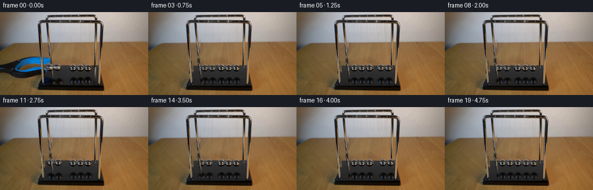
展开代码变化
--- 上一保存版本
+++ 本次保存版本
@@ -18,6 +18,9 @@
# support posts in front of it.
tool_outline=[(0,90),(9,87),(19,83),(28,79),(42,77),(63,77),(77,78),(85,79),(88,82),(88,87),(83,91),(73,93),(72,98),(78,103),(80,107),(77,110),(65,113),(46,115),(29,116),(17,113),(11,110),(0,105)]
tool=poly_mask(tool_outline)
+hole=poly_mask([(28,101),(32,97),(40,94),(51,91),(59,90),(66,92),(70,96),(58,97),(47,99),(36,102)])
+tool[hole>0]=0
+full_tool_mask=tool.copy()
# Soft silhouette, but not the frame uprights.
tool = cv2.GaussianBlur(tool,(3,3),.52).astype(float)/255
frontcenter=68.6+(Y-20)*.052
@@ -51,10 +54,22 @@
# Only the rightmost edge of the grabber crosses the base at the front left.
replace=wood.copy(); replace[basezone]=basecol[basezone]
# mask expanded one pixel so blue and dark defocus fringes disappear
-wipe=cv2.dilate((tool>0.1).astype(np.uint8),np.ones((3,3),np.uint8))
-wipe[frontpost|backpost]=0
-blend=cv2.GaussianBlur(wipe.astype(float),(3,3),.4)
-plate=ORG.astype(float)*(1-blend[...,None])+replace*blend[...,None]
+# Solve a harmonic color correction over the uncovered wood. This matches
+# both illumination and color continuously at the old tool silhouette.
+fullwipe=cv2.dilate(poly_mask(tool_outline),np.ones((7,7),np.uint8))>0
+corr=ORG.astype(float)-wood
+# Avoid allowing frame metal, base black, or the tool itself into the boundary.
+corr[fullwipe|basezone|frontpost|backpost]=0
+fixed=corr.copy()
+for k in range(500):
+ average=(np.roll(corr,1,axis=0)+np.roll(corr,-1,axis=0)+np.roll(corr,1,axis=1)+np.roll(corr,-1,axis=1))*.25
+ corr[fullwipe]=average[fullwipe]
+ corr[~fullwipe]=fixed[~fullwipe]
+cleanwood=np.clip(wood+corr,0,255)
+plate=ORG.astype(float).copy()
+plate[fullwipe]=cleanwood[fullwipe]
+plate[fullwipe&basezone]=basecol[fullwipe&basezone]
+plate[frontpost|backpost]=ORG[frontpost|backpost]
# Four active bob silhouettes, eyelets, and their reflected images are removed
# from the still plate. The central bob is kept pixel-for-pixel.
@@ -115,7 +130,7 @@
for xx in range(67,94):
if frontpost[yy,xx] or backpost[yy,xx]:
c=postcolors[yy,xx].copy()
- if c[2]>c[0]*1.13:
+ if c[2]>c[0]*1.05:
c[2]=c[0]*.88; c[1]=c[0]*1.02
plate[yy,xx]=c
postcolors[yy,xx]=c
@@ -180,7 +195,19 @@
plate=np.uint8(np.clip(plate,0,255))
Image.fromarray(plate).save(ROOT/'.tmp/plate.png')
base=Image.fromarray(plate).resize((W*S,H*S),Image.Resampling.BICUBIC).convert('RGBA')
-tool_rgba=Image.fromarray(np.dstack([ORG,np.uint8(tool*255)])).resize((W*S,H*S),Image.Resampling.BICUBIC)
+toolpixels=ORG.astype(float).copy()
+for yy in range(76,111):
+ for part in [frontpost,backpost]:
+ row=np.flatnonzero(part[yy]& (full_tool_mask[yy]>0))
+ if len(row):
+ lo,hi=row[0],row[-1]
+ left=toolpixels[yy,max(0,lo-2)]
+ right=toolpixels[yy,min(W-1,hi+2)]
+ for xx in row:
+ f=(xx-lo+1)/(hi-lo+2)
+ toolpixels[yy,xx]=left*(1-f)+right*f
+truealpha=cv2.GaussianBlur(full_tool_mask.astype(float)/255,(3,3),.5)
+tool_rgba=Image.fromarray(np.dstack([np.uint8(toolpixels),np.uint8(truealpha*255)])).resize((W*S,H*S),Image.Resampling.BICUBIC)
# Occlusion by the frame metal is preserved, including when bobs pass behind
# a front post on their outermost excursion.
postmask=np.uint8((frontpost|backpost)*255)
候选 06播放与检查图
点击播放 · 原生 RGB 像素
展开代码变化
--- 上一保存版本
+++ 本次保存版本
@@ -213,7 +213,21 @@
postmask=np.uint8((frontpost|backpost)*255)
# Keep the right upright in front of a sphere at its outward amplitude.
postmask=np.maximum(postmask,poly_mask([(173,20),(177,20),(173,128),(169,128),(169,70)]))
+postmask=np.maximum(postmask,poly_mask([(73,14),(170,14),(173,19),(73,19)]))
+postmask=np.maximum(postmask,poly_mask([(83,5),(164,5),(167,10),(81,10)]))
posts=Image.fromarray(np.dstack([np.uint8(postcolors),postmask])).resize((W*S,H*S),Image.Resampling.BICUBIC)
+
+# Keep all pixels outside the moving demonstration exactly as photographed.
+edit=(np.max(np.abs(plate.astype(float)-ORG.astype(float)),axis=2)>0).astype(np.uint8)
+edit[74:122,0:95]=1
+edit[86:130,77:174]=1
+for ax in rest:
+ for yy in range(7,95):
+ span=16*(yy-7)/88+3
+ lo=max(0,int(ax-span)); hi=min(W,int(ax+span+1))
+ edit[yy,lo:hi]=1
+edit=cv2.dilate(edit,np.ones((3,3),np.uint8)).astype(float)
+edit=cv2.GaussianBlur(edit,(3,3),.4)[...,None]
# Minimal static plate is only exposed where motion requires it.
def draw_at(t):
@@ -246,7 +260,8 @@
spr,cent=sprites[i]
im.alpha_composite(spr,(round(xs[i]*S-cent[0]),round(ys[i]*S-cent[1])))
im.alpha_composite(posts)
- return np.array(im.convert('RGB').resize((W,H),Image.Resampling.LANCZOS))
+ rendered=np.array(im.convert('RGB').resize((W,H),Image.Resampling.LANCZOS)).astype(float)
+ return np.uint8(np.clip(rendered*edit+ORG*(1-edit)+.5,0,255))
frames=[ORG.copy()]
for n in range(1,20):
可观测工具轨迹
实际执行的命令与返回图片。
命令 1exit 0
/bin/bash -lc "ls -la && cat prompt.txt && printf '\\n---RULES---\\n' && cat GENERATION_RULES.md"
命令 2exit 0
/bin/bash -lc "cat artifact_io.py && python - <<'PY'
from PIL import Image
im=Image.open('first_frame.png'); print(im.size);im.resize((1024,576)).save('.tmp/first_big.png')
PY"命令 3exit 0
/bin/bash -lc "python - <<'PY'
import importlib.util
for x in ['cv2','numpy','scipy','PIL']:
print(x, bool(importlib.util.find_spec(x)))
from PIL import Image
im=Image.open('first_frame.png');im.crop((64,70,178,135)).resize((912,520)).save('.tmp/crop.png')
PY"命令 4exit 0
/bin/bash -lc "python - <<'PY'
from PIL import Image
im=Image.open('first_frame.png'); im.crop((76,85,160,108)).resize((1008,276),Image.Resampling.NEAREST).save('.tmp/balls.png')
PY"命令 5exit 0
/bin/bash -lc "python - <<'PY'
from PIL import Image
im=Image.open('first_frame.png');im.resize((1536,864),Image.Resampling.LANCZOS).save('.tmp/large.png')
PY"命令 6exit 0
/bin/bash -lc "python - <<'PY'
from PIL import Image
im=Image.open('first_frame.png');im.crop((85,14,160,94)).resize((600,640)).save('.tmp/wires.png')
PY"命令 7exit 0
/bin/bash -lc "cat > generate.py <<'PY'
from pathlib import Path
import numpy as np
from PIL import Image, ImageDraw, ImageFilter
import cv2
from scipy.ndimage import map_coordinates, gaussian_filter
from artifact_io import save
ROOT=Path(__file__).resolve().parent
ORG=np.array(Image.open(ROOT/'first_frame.png').convert('RGB'))
H,W=ORG.shape[:2]
Y,X=np.mgrid[:H,:W].astype(float)
def poly_mask(points):
im=Image.new('L',(W,H)); ImageDraw.Draw(im).polygon(points,fill=255)
return np.asarray(im).copy()
# The grasping implement is a separate foreground layer; preserve the chrome
# support posts in front of it.
tool_outline=[(0,90),(9,87),(19,83),(28,79),(42,77),(63,77),(77,78),(85,79),(88,82),(88,87),(83,90),(70,91),(58,89),(49,90),(35,94),(29,99),(26,102),(35,102),(47,99),(58,98),(67,98),(73,100),(78,103),(80,107),(77,110),(65,112),(46,115),(29,116),(17,113),(11,110),(0,105)]
tool=poly_mask(tool_outline)
# Soft silhouette, but not the frame uprights.
tool = cv2.GaussianBlur(tool,(3,3),.52).astype(float)/255
frontpost=poly_mask([(65,17),(71,15),(77,119),(79,127),(71,127),(68,83)])>0
backpost=poly_mask([(78,9),(85,9),(91,103),(94,125),(87,125),(82,72)])>0
# narrow post occlusion mask derived from the visible boundaries
frontpost=poly_mask([(69,64),(73,64),(77,125),(71,126)])>0
backpost=poly_mask([(81,61),(85,60),(91,105),(93,125),(88,125),(85,93)])>0
tool[frontpost|backpost]=0
# Recover the wooden tabletop's low frequency illumination and use only the
# photographed tabletop for fine grain in the newly uncovered region.
known=np.zeros((H,W),bool)
known[118:144,0:61]=True
known[61:77,14:63]=True
known[66:135,190:256]=True
known[55:73,95:165]=True
known[72:86,95:165]=True
known[70:100,0:12]=False
features=np.stack([np.ones_like(X),X/256,Y/144,(X/256)**2,(Y/144)**2,X*Y/(256*144)],-1)
coef=np.linalg.lstsq(features[known],ORG[known].astype(float),rcond=None)[0]
illum=features@coef
residual=ORG.astype(float)-illum
# Mirror an undisturbed near-left grain patch so its light level can be matched.
sx=np.mod(X*.83+3,58)
sy=118+np.mod((Y-75)*.71,25)
texture=np.stack([map_coordinates(residual[:,:,c],[sy,sx],order=1,mode='reflect') for c in range(3)],-1)
wood=np.clip(illum+texture*.82,0,255)
# Clone the thin exposed portion of the plinth rather than extrapolating wood.
basezone=(X>=(-.71*(Y-127)+67))&(Y>=93)&(Y<128)
basecol=np.stack([np.full((H,W),v) for v in (45,45,43)],-1).astype(float)
basecol+=((Y-103)*(-.25))[...,None]
# Only the rightmost edge of the grabber crosses the base at the front left.
replace=wood.copy(); replace[basezone]=basecol[basezone]
# mask expanded one pixel so blue and dark defocus fringes disappear
wipe=cv2.dilate((tool>0.1).astype(np.uint8),np.ones((3,3),np.uint8))
wipe[frontpost|backpost]=0
blend=cv2.GaussianBlur(wipe.astype(float),(3,3),.4)
plate=ORG.astype(float)*(1-blend[...,None])+replace*blend[...,None]
# Four active bob silhouettes, eyelets, and their reflected images are removed
# from the still plate. The central bob is kept pixel-for-pixel.
remove=np.zeros((H,W),np.uint8)
for cx,cy in [(85.3,96.3),(98.3,96.4),(138.9,97.4),(152.0,97.4)]:
cv2.ellipse(remove,(round(cx),round(cy)),(8,8),0,0,360,255,-1)
for cx in [92,103,139,152]:
cv2.ellipse(remove,(cx,119),(9,9),0,0,360,255,-1)
# Blur the big left pair remnants into matte black below the back edge.
plate=cv2.inpaint(np.uint8(np.clip(plate,0,255)),remove,4,cv2.INPAINT_TELEA).astype(float)
# Rebuild the black rear edge where the raised left two spheres hid it.
for yy in range(90,109):
for xx in range(78,112):
if remove[yy,xx] and not backpost[yy,xx] and not frontpost[yy,xx]:
if yy>=93:
# locally sample the large uninterrupted matte interval
val=ORG[min(yy,108),115].astype(float)
plate[yy,xx]=val
# Restore the original support rail where visible and analytically continue
# its short occluded segment behind the left sphere.
for yy in range(88,104):
center=87.2+(yy-88)*.125
for xx in range(84,94):
dd=xx-center
if abs(dd)<2.2 and remove[yy,xx]:
palette=[(28,28,28),(61,64,64),(143,132,104),(162,146,112),(79,75,59)]
k=min(4,max(0,int((dd+2.2)/4.4*5)))
plate[yy,xx]=palette[k]
# Remove the old moving suspension threads with a local horizontal median;
# strings are a pair of light, thin filaments for each bob.
for i,coords in enumerate([((92,17),(85,89)),((104,17),(98,89)),((139,17),(139,89)),((152,17),(152,89))]):
(ax,ay),(bx,by)=coords
for yy in range(ay+2,by+1):
xx=int(round(ax+(bx-ax)*(yy-ay)/(by-ay)))
if frontpost[yy,xx] or backpost[yy,xx]: continue
# preserve table grain rather than painting a solid line
for off in [-1,0,1]:
x0=xx+off
plate[yy,x0]=(plate[yy,max(0,xx-3)]+plate[yy,min(255,xx+3)])*.5
# Photographic sphere sprites retain the complicated room reflections.
S=4
def sphere_sprite(cx):
x0=int(round(cx))-8; y0=88
crop=Image.fromarray(ORG[y0:106,x0:x0+17]).resize((17*S,18*S),Image.Resampling.BICUBIC)
yy,xx=np.mgrid[0:18*S,0:17*S]; xx=(xx+.5)/S; yy=(yy+.5)/S
ccx=cx-x0; ccy=97.2-y0
rr=np.sqrt(((xx-ccx)/6.25)**2+((yy-ccy)/6.22)**2)
a=np.clip((1-rr)*S*6.22+.5,0,1)
# chrome eyelet at the crown of each bob
eye=np.clip((1-np.sqrt(((xx-ccx)/2.0)**2+((yy-3.0)/2.0)**2))*S*2+.5,0,1)
a=np.maximum(a,eye)
rgba=np.dstack([np.array(crop),np.uint8(a*255)])
return Image.fromarray(rgba), (ccx*S,(97.2-y0)*S)
sprites=[sphere_sprite(125.8),sphere_sprite(138.9),sphere_sprite(125.8),sphere_sprite(138.9),sphere_sprite(152.0)]
# Soft mirror images retain the same steel highlights, with the defocus and
# reduced brightness visible in the source frame.
def reflection_sprite(cx):
x0=int(round(cx))-9; y0=110
crop=np.array(Image.fromarray(ORG[y0:129,x0:x0+19]).resize((19*S,19*S),Image.Resampling.BICUBIC))
yy,xx=np.mgrid[0:19*S,0:19*S]; xx=(xx+.5)/S; yy=(yy+.5)/S
r=np.sqrt(((xx-(cx-x0))/7.7)**2+((yy-9.1)/8.4)**2)
a=np.clip((1-r)*3.0,0,1)*.92
return Image.fromarray(np.dstack([crop,np.uint8(a*255)])),((cx-x0)*S,9.1*S)
refl=reflection_sprite(139.0)
rest=np.array([99.5,112.6,125.8,138.9,152.0])
L=80.0
A0=14.0
period=.89
release=.06
def positions(t):
t=max(0,t-release)
w=2*np.pi/period
q=-A0*np.cos(w*t)*np.exp(-.050*t)
x=rest.copy()
if q<0: x[:2]+=q
else: x[3:]+=q
off=x-rest
y=97.2-(L-np.sqrt(L*L-off*off))
return x,y
plate=np.uint8(np.clip(plate,0,255))
Image.fromarray(plate).save(ROOT/'.tmp/plate.png')
base=Image.fromarray(plate).resize((W*S,H*S),Image.Resampling.BICUBIC).convert('RGBA')
tool_rgba=Image.fromarray(np.dstack([ORG,np.uint8(tool*255)])).resize((W*S,H*S),Image.Resampling.BICUBIC)
# Occlusion by the frame metal is preserved, including when bobs pass behind
# a front post on their outermost excursion.
postmask=poly_mask([(66,19),(71,17),(74,72),(77,121),(78,128),(71,128),(68,88)])
postmask2=poly_mask([(173,20),(177,20),(173,128),(168,128),(169,70)])
postmask=np.maximum(postmask,postmask2)
posts=Image.fromarray(np.dstack([ORG,postmask])).resize((W*S,H*S),Image.Resampling.BICUBIC)
# Minimal static plate is only exposed where motion requires it.
def draw_at(t):
im=base.copy()
xs,ys=positions(t)
# Reflections move on the same matte pedestal, rather than remaining still.
for i in [0,1,3,4]:
spr,cent=refl
rise=97.2-ys[i]
im.alpha_composite(spr,(round(xs[i]*S-cent[0]+.6*S),round((119.1+rise*.72)*S-cent[1])))
# Withdraw the now empty grasping tool toward the left hand edge.
progress=np.clip(t/.65,0,1)
displacement=108*(progress*progress*(3-2*progress))
if displacement<100:
im.alpha_composite(tool_rgba,(round(-displacement*S),round(progress*4*S)))
d=ImageDraw.Draw(im,'RGBA')
for i in [0,1,3,4]:
cx,cy=xs[i],ys[i]
# suspension at the front and rear crossbars; the camera projects the
# two wires to a shallow V terminating at the polished steel eyelet.
for ax,ay,light in [(rest[i]-.9,16.0,False),(rest[i]-2.7,7.0,True)]:
end=(cx,cy-5.3)
col=(76,72,64,76) if not light else (203,198,179,86)
d.line((ax*S,ay*S,end[0]*S,end[1]*S),fill=col,width=1)
if light:
d.line(((ax+.22)*S,ay*S,(end[0]+.22)*S,end[1]*S),fill=(214,206,184,42),width=1)
for i in [0,1,3,4]:
spr,cent=sprites[i]
im.alpha_composite(spr,(round(xs[i]*S-cent[0]),round(ys[i]*S-cent[1])))
im.alpha_composite(posts)
return np.array(im.convert('RGB').resize((W,H),Image.Resampling.LANCZOS))
frames=[ORG.copy()]
for n in range(1,20):
t=n/4
# Short, realistic exposure integrates the rapidly moving polished spheres.
samples=[draw_at(t+dt).astype(float) for dt in [-.009,0,.009]]
frames.append(np.uint8(np.clip(sum(samples)/3+.5,0,255)))
frames=np.stack(frames)
save(frames,ROOT)
PY
python generate.py"命令 8exit 0
/bin/bash -lc "python - <<'PY'
from PIL import Image
Image.open('.tmp/plate.png').resize((1024,576)).save('.tmp/platebig.png')
Image.open('frames/03.png').resize((1024,576)).save('.tmp/framebig.png')
PY"命令 9exit 0
/bin/bash -lc "python - <<'PY'
from PIL import Image,ImageDraw
im=Image.open('first_frame.png').resize((1024,576),Image.Resampling.NEAREST)
d=ImageDraw.Draw(im)
for x in range(64,96,2):
d.line((x*4,260,x*4,510),fill=(255,0,0),width=1);d.text((x*4,255),str(x),fill='white')
for y in range(75,126,10):
d.line((240,y*4,392,y*4),fill=(255,0,0),width=1);d.text((235,y*4),str(y),fill='white')
im.crop((240,250,392,520)).resize((456,810)).save('.tmp/grid.png')
PY"命令 10exit 0
/bin/bash -lc "python - <<'PY'
from PIL import Image
import numpy as np
p=np.array(Image.open('first_frame.png'))
for y in [65,75,80,85,90,105,115]:
print(y, [(x,tuple(p[y,x])) for x in range(67,92)])
PY"命令 11exit 0
/bin/bash -lc "python - <<'PY'
p='generate.py'
s=open(p).read()
s=s.replace(\"tool_outline=[(0,90),(9,87),(19,83),(28,79),(42,77),(63,77),(77,78),(85,79),(88,82),(88,87),(83,90),(70,91),(58,89),(49,90),(35,94),(29,99),(26,102),(35,102),(47,99),(58,98),(67,98),(73,100),(78,103),(80,107),(77,110),(65,112),(46,115),(29,116),(17,113),(11,110),(0,105)]\", \"tool_outline=[(0,90),(9,87),(19,83),(28,79),(42,77),(63,77),(77,78),(85,79),(88,82),(88,87),(83,91),(73,93),(72,98),(78,103),(80,107),(77,110),(65,113),(46,115),(29,116),(17,113),(11,110),(0,105)]\")
a=s.index('frontpost=poly_mask')
b=s.index('\\n# Recover',a)
s=s[:a]+'''frontcenter=68.6+(Y-20)*.052
backcenter=84.0+(Y-60)*.12
frontpost=(np.abs(X-frontcenter)<2.1)&(Y>=20)&(Y<127)
backpost=(np.abs(X-backcenter)<1.65)&(Y>=60)&(Y<125)
tool[frontpost|backpost]=0
'''+s[b:]
s=s.replace('sx=np.mod(X*.83+3,58)\\nsy=118+np.mod((Y-75)*.71,25)','sx=np.minimum(255,X+164)\\nsy=Y')
s=s.replace(\"basezone=(X>=(-.71*(Y-127)+67))&(Y>=93)&(Y<128)\",\"basezone=(X>=(-.48*(Y-93)+82))&(Y>=93)&(Y<128)\")
# do not let wood inpainting bleed over the sharp back of the pedestal
s=s.replace(\"# Rebuild the black rear edge where the raised left two spheres hid it.\",\"# Rebuild the sharp rear edge underneath the moving objects.\")
s=s.replace('for xx in range(78,112):','for xx in range(78,161):')
s=s.replace('if remove[yy,xx] and not backpost[yy,xx] and not frontpost[yy,xx]:','if remove[yy,xx] and not backpost[yy,xx] and not frontpost[yy,xx] and abs(xx-125.8)>7:')
# insert repair at end of plate prep
pos=s.index('# Photographic sphere sprites')
s=s[:pos]+'''# The reflected moving balls reveal the neutral lacquer, not dark ghosts.
for yy in range(107,128):
color=np.mean(ORG[yy,110:118].astype(float),axis=0)
for xx in range(78,163):
if remove[yy,xx] and not backpost[yy,xx] and not frontpost[yy,xx]:
plate[yy,xx]=color
# Repair color spill at the two rails where the blue jaw was occluded.
postcolors=ORG.copy().astype(float)
for yy in range(76,112):
for xx in range(67,93):
if frontpost[yy,xx] or backpost[yy,xx]:
c=postcolors[yy,xx].copy()
if c[2]>c[0]*1.13:
c[2]=c[0]*.88; c[1]=c[0]*1.02
plate[yy,xx]=c
postcolors[yy,xx]=c
'''+s[pos:]
a=s.index('postmask=poly_mask')
b=s.index('\\n# Minimal',a)
s=s[:a]+'''postmask=np.uint8((frontpost|backpost)*255)
# Keep the right upright in front of a sphere at its outward amplitude.
postmask=np.maximum(postmask,poly_mask([(173,20),(177,20),(173,128),(169,128),(169,70)]))
posts=Image.fromarray(np.dstack([np.uint8(postcolors),postmask])).resize((W*S,H*S),Image.Resampling.BICUBIC)
'''+s[b:]
s=s.replace(\"d=ImageDraw.Draw(im,'RGBA')\",\"wirelayer=Image.new('RGBA',im.size,(0,0,0,0))\\n d=ImageDraw.Draw(wirelayer,'RGBA')\")
s=s.replace('for i in [0,1,3,4]:\\n spr,cent=sprites[i]','im.alpha_composite(wirelayer)\\n for i in [0,1,3,4]:\\n spr,cent=sprites[i]')
open(p,'w').write(s)
PY
python generate.py
python - <<'PY'
from PIL import Image
Image.open('.tmp/plate.png').resize((1024,576)).save('.tmp/platebig.png')
Image.open('frames/03.png').resize((1024,576)).save('.tmp/framebig.png')
PY"命令 12exit 0
/bin/bash -lc "python - <<'PY'
p='generate.py';s=open(p).read().replace('sx=np.minimum(255,X+164)','sx=194+np.mod(X*.61,56)')
a=s.index('# The reflected moving balls')
b=s.index('# Photographic sphere',a)
s=s[:a]+'''# Recover a smooth, dark lacquer plane and remove both the old shadows
# and the blue object's reflected glow.
basepoly=poly_mask([(82,93),(164,92),(168,127),(68,127)])>0
matte=np.zeros_like(plate)
for yy in range(H):
source=np.mean(ORG[max(94,min(126,yy)),110:118].astype(float),axis=0)
matte[yy,:,:]=source
# Very subtle illumination falloff over the base.
matte+=(np.clip((X-120)*.013,-.5,.5))[...,None]
central=((X-125.8)/7.2)**2+((Y-97.2)/8.5)**2 < 1
repair=basepoly & ~frontpost & ~backpost & ~central
plate[repair]=matte[repair]
# Correct reflected tool color on the two steel upright edges, while keeping
# the rail's photographed highlight texture elsewhere.
postcolors=ORG.copy().astype(float)
for yy in range(76,112):
for xx in range(67,94):
if frontpost[yy,xx] or backpost[yy,xx]:
c=postcolors[yy,xx].copy()
if c[2]>c[0]*1.13:
c[2]=c[0]*.88; c[1]=c[0]*1.02
plate[yy,xx]=c
postcolors[yy,xx]=c
# At the initial lifted spheres, recreate the segment of rear upright which
# was hidden by the balls, including its narrow warm highlight.
for yy in range(90,103):
cc=84+(yy-60)*.12
for xx in range(84,94):
if abs(xx-cc)<1.8:
delta=xx-cc
vals=[(32,31,29),(67,68,64),(145,131,104),(95,85,70)]
k=int(np.clip((delta+1.8)/3.6*4,0,3))
postcolors[yy,xx]=vals[k]
plate[yy,xx]=vals[k]
'''+s[b:]
s=s.replace('for i in [0,1,3,4]:\\n spr,cent=refl','for i in [0,1,2,3,4]:\\n spr,cent=refl')
open(p,'w').write(s)
PY
python generate.py
python - <<'PY'
from PIL import Image
Image.open('frames/03.png').resize((1024,576)).save('.tmp/framebig.png')
PY"命令 13exit 0
/bin/bash -lc "python - <<'PY'
p='generate.py';s=open(p).read()
s=s.replace(\"tool=poly_mask(tool_outline)\\n# Soft\", \"tool=poly_mask(tool_outline)\\nhole=poly_mask([(28,101),(32,97),(40,94),(51,91),(59,90),(66,92),(70,96),(58,97),(47,99),(36,102)])\\ntool[hole>0]=0\\nfull_tool_mask=tool.copy()\\n# Soft\")
a=s.index('wipe=cv2.dilate')
b=s.index('\\n# Four active',a)
s=s[:a]+'''# Solve a harmonic color correction over the uncovered wood. This matches
# both illumination and color continuously at the old tool silhouette.
fullwipe=cv2.dilate(poly_mask(tool_outline),np.ones((7,7),np.uint8))>0
corr=ORG.astype(float)-wood
# Avoid allowing frame metal, base black, or the tool itself into the boundary.
corr[fullwipe|basezone|frontpost|backpost]=0
fixed=corr.copy()
for k in range(500):
average=(np.roll(corr,1,axis=0)+np.roll(corr,-1,axis=0)+np.roll(corr,1,axis=1)+np.roll(corr,-1,axis=1))*.25
corr[fullwipe]=average[fullwipe]
corr[~fullwipe]=fixed[~fullwipe]
cleanwood=np.clip(wood+corr,0,255)
plate=ORG.astype(float).copy()
plate[fullwipe]=cleanwood[fullwipe]
plate[fullwipe&basezone]=basecol[fullwipe&basezone]
plate[frontpost|backpost]=ORG[frontpost|backpost]
'''+s[b:]
# residual blue on front left post edges
s=s.replace('if c[2]>c[0]*1.13:', 'if c[2]>c[0]*1.05:')
# build complete tool layer to avoid chrome rail holes moving with it
s=s.replace(\"tool_rgba=Image.fromarray(np.dstack([ORG,np.uint8(tool*255)])).resize((W*S,H*S),Image.Resampling.BICUBIC)\",'''toolpixels=ORG.astype(float).copy()
for yy in range(76,111):
for part in [frontpost,backpost]:
row=np.flatnonzero(part[yy]& (full_tool_mask[yy]>0))
if len(row):
lo,hi=row[0],row[-1]
left=toolpixels[yy,max(0,lo-2)]
right=toolpixels[yy,min(W-1,hi+2)]
for xx in row:
f=(xx-lo+1)/(hi-lo+2)
toolpixels[yy,xx]=left*(1-f)+right*f
truealpha=cv2.GaussianBlur(full_tool_mask.astype(float)/255,(3,3),.5)
tool_rgba=Image.fromarray(np.dstack([np.uint8(toolpixels),np.uint8(truealpha*255)])).resize((W*S,H*S),Image.Resampling.BICUBIC)''')
open(p,'w').write(s)
PY
python generate.py
python - <<'PY'
from PIL import Image
Image.open('frames/03.png').resize((1024,576)).save('.tmp/framebig.png')
Image.open('frames/01.png').resize((1024,576)).save('.tmp/withdraw.png')
PY"命令 14exit 0
/bin/bash -lc "python - <<'PY'
p='generate.py';s=open(p).read()
s=s.replace(\"postmask=np.maximum(postmask,poly_mask([(173,20),(177,20),(173,128),(169,128),(169,70)]))\", \"postmask=np.maximum(postmask,poly_mask([(173,20),(177,20),(173,128),(169,128),(169,70)]))\\npostmask=np.maximum(postmask,poly_mask([(73,14),(170,14),(173,19),(73,19)]))\\npostmask=np.maximum(postmask,poly_mask([(83,5),(164,5),(167,10),(81,10)]))\")
s=s.replace(\"# Minimal static plate is only exposed where motion requires it.\\ndef draw_at\", \"\"\"# Keep all pixels outside the moving demonstration exactly as photographed.
edit=(np.max(np.abs(plate.astype(float)-ORG.astype(float)),axis=2)>0).astype(np.uint8)
edit[74:122,0:95]=1
edit[86:130,77:174]=1
for ax in rest:
for yy in range(7,95):
span=16*(yy-7)/88+3
lo=max(0,int(ax-span)); hi=min(W,int(ax+span+1))
edit[yy,lo:hi]=1
edit=cv2.dilate(edit,np.ones((3,3),np.uint8)).astype(float)
edit=cv2.GaussianBlur(edit,(3,3),.4)[...,None]
# Minimal static plate is only exposed where motion requires it.
def draw_at\"\"\")
s=s.replace(\"return np.array(im.convert('RGB').resize((W,H),Image.Resampling.LANCZOS))\", \"rendered=np.array(im.convert('RGB').resize((W,H),Image.Resampling.LANCZOS)).astype(float)\\n return np.uint8(np.clip(rendered*edit+ORG*(1-edit)+.5,0,255))\")
open(p,'w').write(s)
PY
python generate.py
python - <<'PY'
import numpy as np
from PIL import Image
p=np.load('pixels.npz')['pixels']; print('Encoded video shape:',p.shape)
a=np.array(Image.open('first_frame.png')); b=np.array(Image.open('frames/00.png'));assert np.array_equal(a,b); print('First frame pixel-identical:',True)
print('Frames:',len(list(__import__('pathlib').Path('frames').glob('*.png'))))
PY"视觉工具实际返回图片 1
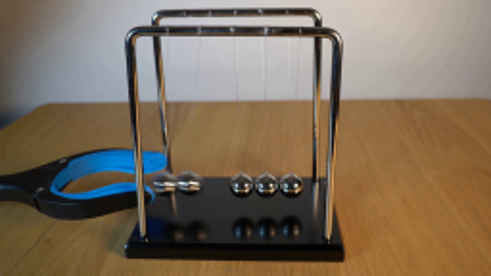
视觉工具实际返回图片 2
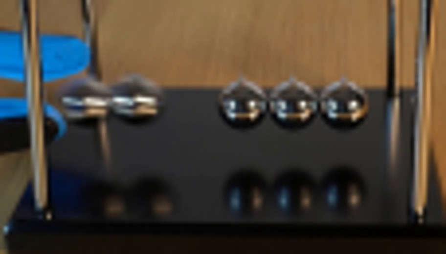
视觉工具实际返回图片 3
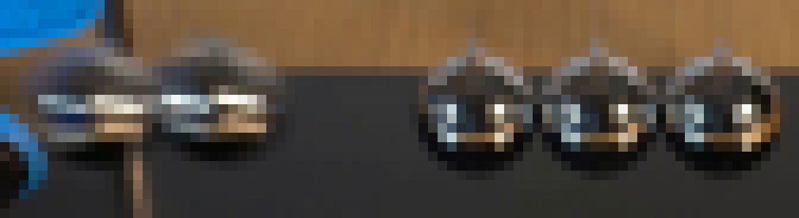
视觉工具实际返回图片 4
视觉工具实际返回图片 5
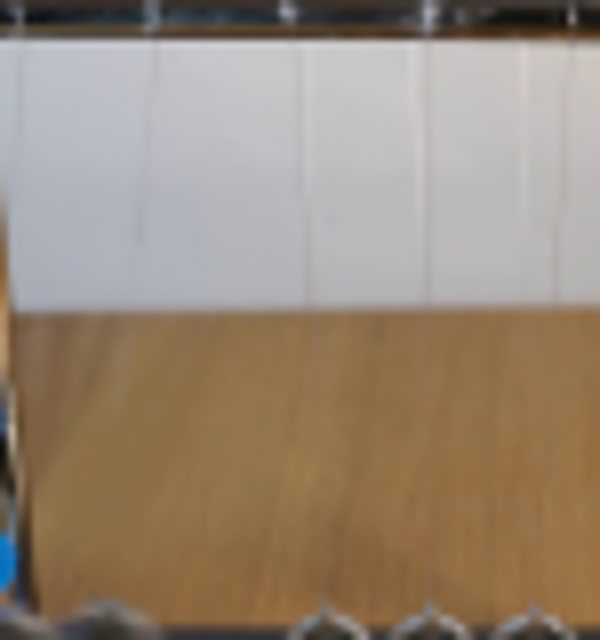
视觉工具实际返回图片 6

视觉工具实际返回图片 7
视觉工具实际返回图片 8
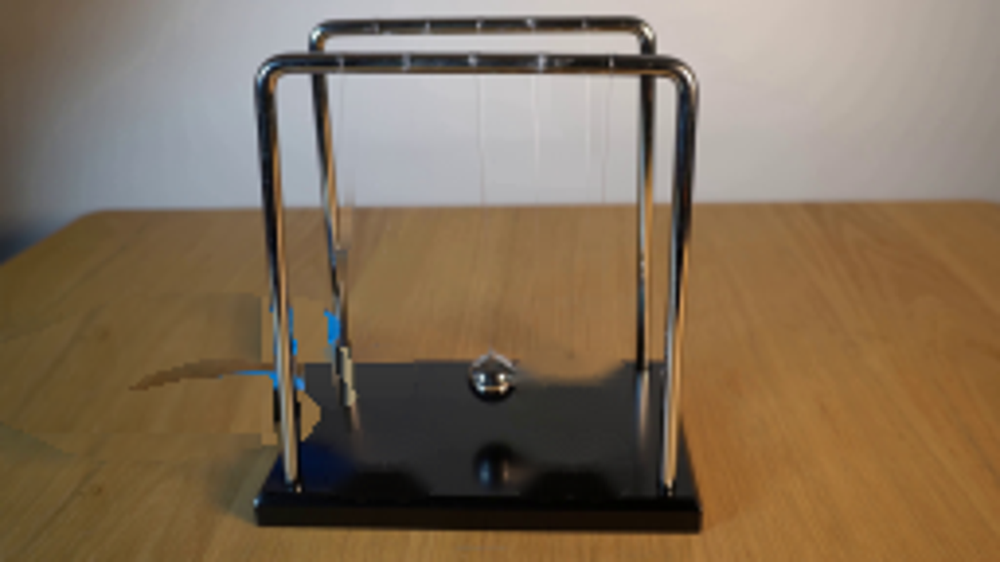
视觉工具实际返回图片 9
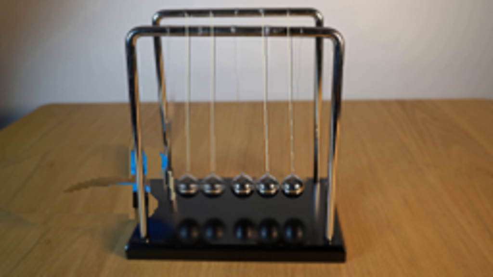
视觉工具实际返回图片 10
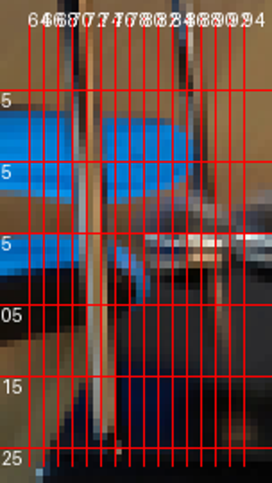
视觉工具实际返回图片 11
视觉工具实际返回图片 12
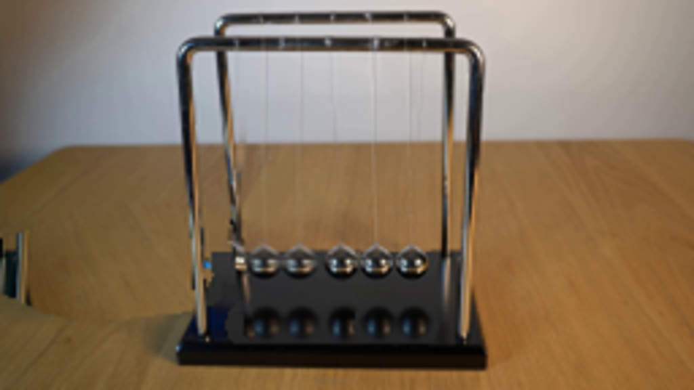
视觉工具实际返回图片 13
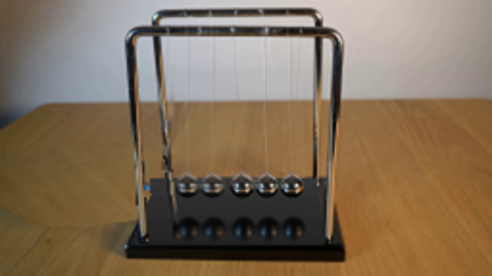
视觉工具实际返回图片 14
视觉工具实际返回图片 15

视觉工具实际返回图片 16
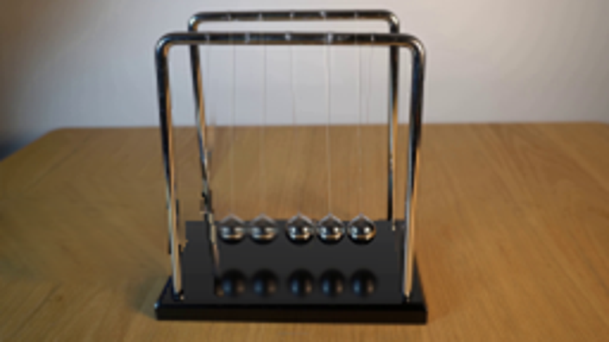
视觉工具实际返回图片 17
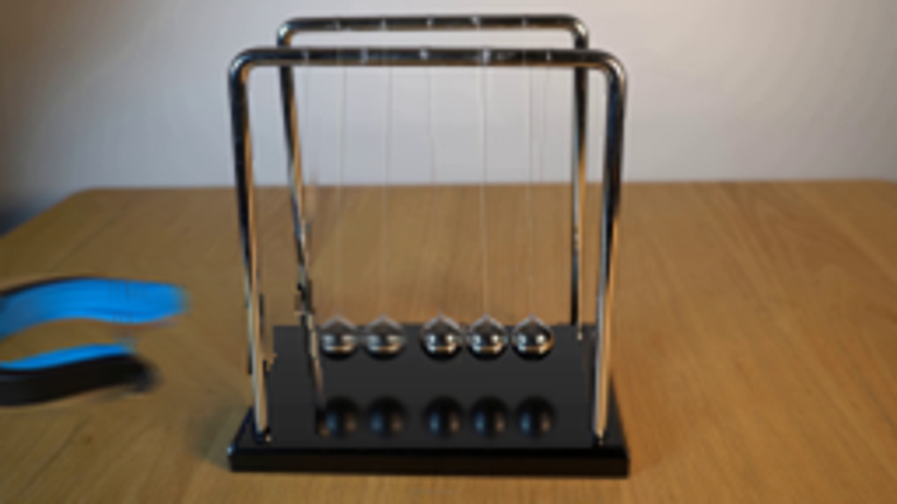
保存候选 6 份；完成命令 14 次；可验证图片返回 17 张。原始 API 响应与完整日志保留在本地。